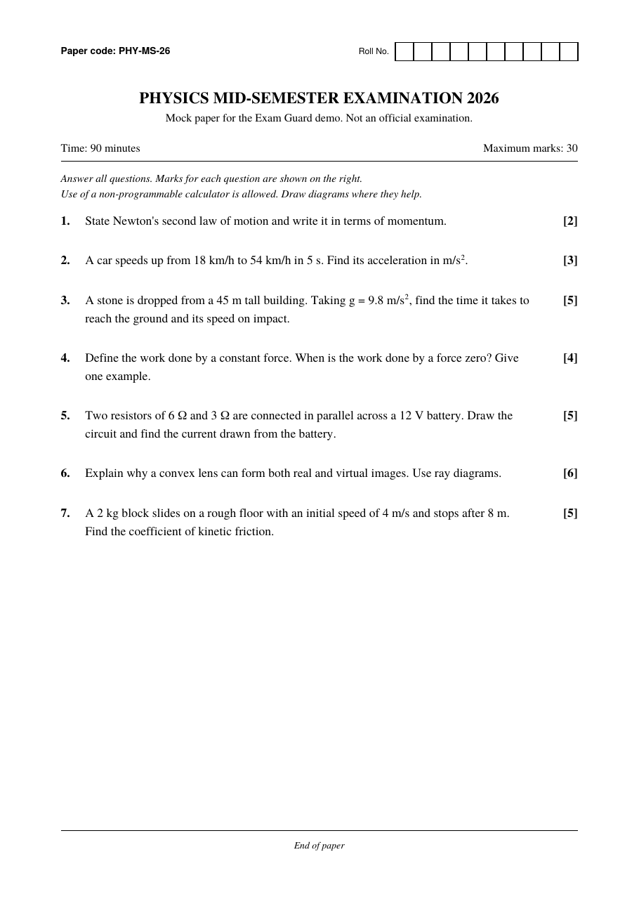
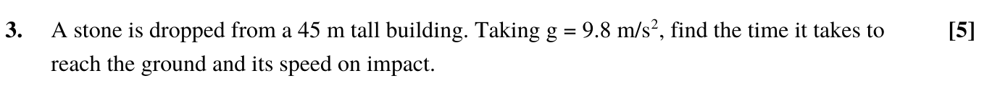
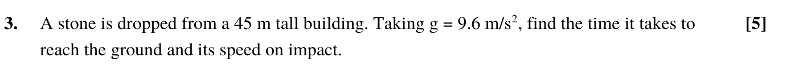

Check the paper against its seal
Before the exam, the board writes the paper's SHA-256 fingerprint to the Cardano ledger. Drop a copy here and Exam Guard fingerprints it in your browser, reads that record from the ledger and tells you if the two are the same file. The paper itself never leaves your device.

With "any", a file passes only if its fingerprint is on the ledger. Pick a paper to see exactly how a copy differs from it.
No paper to hand? Try the mock paper.
Fingerprint:
Sealed papers
Every row is read from the Cardano ledger when this page opens. The list of transactions lives in registry.json; the fingerprint in each row comes from the ledger, not from that file.
| Paper | Fingerprint on the ledger | Sealed | Signed by | Status |
|---|---|---|---|---|
| Reading the ledger… | ||||
Seal a paper
For exam boards. Fingerprint the final PDF here, then publish the record from your own machine with the wallet that signs your seals. This page never sees a wallet key.
The record and the command to publish it appear here once you choose a file and name it.
What a seal proves
- The board fingerprints the final paper. SHA-256 turns the file into 64 hex characters. Change one byte of the file and almost every character changes.
- It writes the fingerprint to Cardano. A transaction from the board's wallet carries the paper name and fingerprint under metadata label 674. The block time fixes when the seal was made.
- Anyone checks a copy. This page hashes the copy locally, reads the transaction from the ledger and confirms it came from the board's wallet.
- Same fingerprint, same file. If the 64 characters match, the copy is byte for byte the sealed paper.


It proves
- A copy is identical to the file the board sealed.
- The seal existed at a given block time, before the exam.
- The seal was signed by the wallet listed for that board.
It does not prove
- That a paper was never leaked. A leaked copy of the real paper passes, which is useful in itself: a board can tell a real leak from a fake one.
- Anything about printed pages, scans or re-saved PDFs. Those are different files with different fingerprints.
- That the wallet belongs to who it says. Exam Guard trusts the address in the registry; a production setup would publish it from the board's own website.